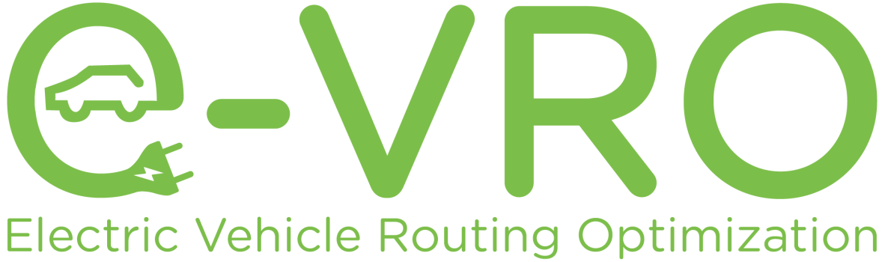
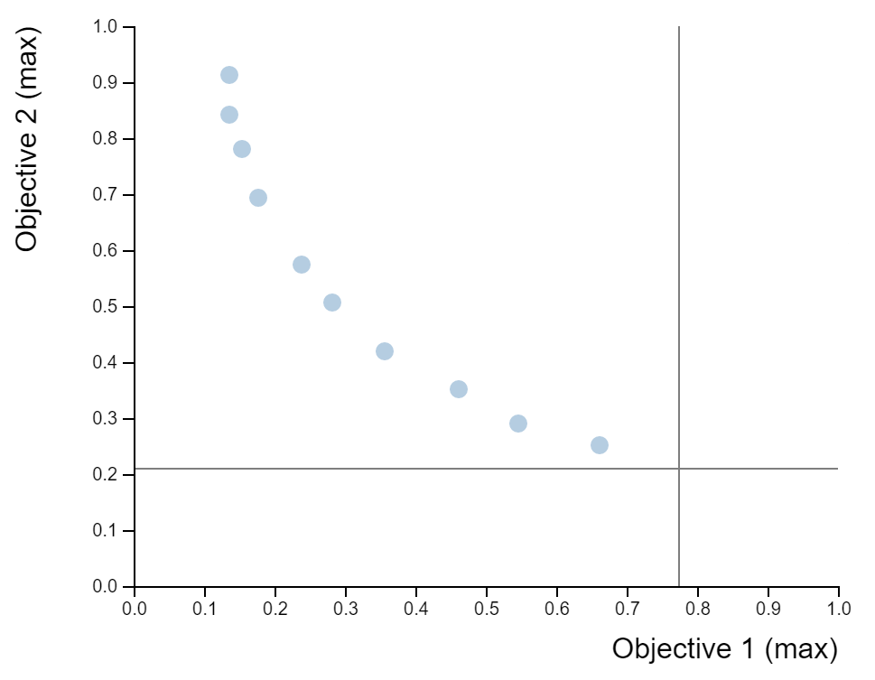
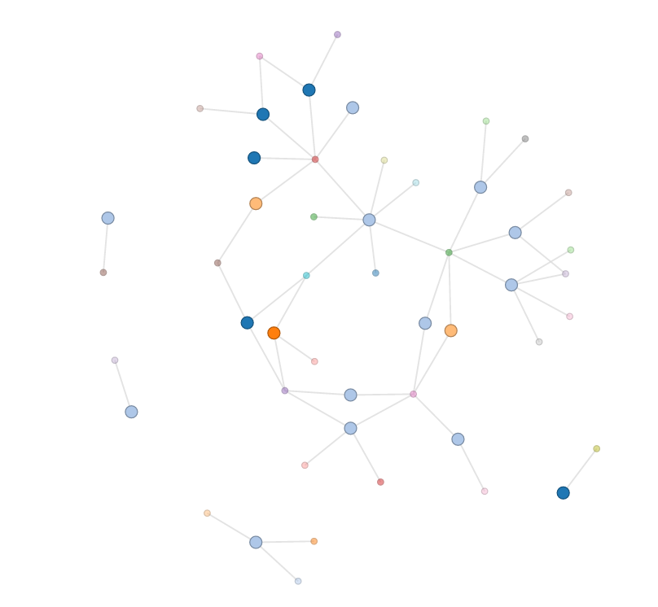

Projects
Extra-curriculars pursued in my free time
Green Logistics
Electric vehicles are increasing in popularity as we try to curb our reliance on fossil fuels. Companies like Tesla are making EVs an attractive option in the consumer market, but the transition to EVs has been slower for goods distribution. This is largely a result of EVs' more lengthy and frequent recharging/refueling requirements compared to internal combustion engine vehicles. Researchers like Jorge Mendoza and Justin Goodson in the field of green logistics seek to mitigate these shortcomings by finding more efficient routing schemes for EVs.
I joined Justin and Jorge's electric vehicle routing optimization (e-VRO) team in 2016. The project is just getting underway, but in the coming months we'll be building a stochastic dynamic program to find optimal delivery routes while capturing uncertainty in charging station availability. Check back here or the e-VRO twitter feed for updates!
The Birthday Fairy Scheduling Assistant
Optimal scheduling of dessert distribution
We QERMies love to use the word "interdisciplinary" to describe the QERM program, and we wanted a visual aid to show just how interdisciplinary we really are. Enter the QERM network diagram. It offers views of QERM's interdisciplinariness as measured by our ecological interests, quantitative methods, and groups with which we collaborate.
Correlation and Conflict Sandbox
The Pareto frontiers generated by multi-objective optimization can be difficult to digest (that's why I'm in the developing MOO Viz). One question you might ask when studying your frontier is "how much do these two objectives conflict with one another?" We asked ourselves this question and set out in search of an answer.
It turns out there is no one perfect answer to this question - researchers have used many measures to quantify conflict. We started trying them and weren't content with what we were seeing, so we decided to see if we could come up with a measure of our own. To aid in our experimentation, I made what I refer to as the Conflict and Correlation Sandbox. You can add data points to a projection of two objectives and see how various conflict or correlation measures respond.
The QERM Network Diagram
Visualizing interdisciplinariness

We QERMies love to use the word "interdisciplinary" to describe the QERM program, and we wanted a visual aid to show just how interdisciplinary we really are. Enter the QERM network diagram. It offers views of QERM's interdisciplinariness as measured by our ecological interests, quantitative methods, and groups with which we collaborate.
SIEVE
Visualizing vaccine efficacy

For the final project in Jeff Heer's "Data Visualization" class, a couple of classmates and I built a tool for HIV researchers at Fred Hutch Research Center. The result of the project was SIEVE (Statistical Interactive Explorer of Vaccine Efficacy).
SIEVE is an interactive visualization for exploring breakthrough sequence data from vaccine efficacy trials. Specifically, SIEVE aids the process of "sieve analysis", which compares the genetic sequences of viruses isolated from infected vaccine versus placebo recipients. The visualization allows researchers to study the effect of the vaccine at the level of amino acids in the breakthrough viruses and find statistically significant differences in the groups.
New! SIEVE has a new home at Fred Hutch: see it here. We also recently added many more datasets to SIEVE, making it not only a powerful visualization and analysis tool but also a unique source for consolidated sieve analysis studies.
Fremont Bridge bicycle data
 Image credit: Seattle PI
Image credit: Seattle PI
In 2012, Seattle DOT installed bike counters on the Fremont Bridge. Since then, hourly counts of the number of cyclists crossing each side of the bridge have been piling up. Graham Clenaghan and I took to visualizing the data. We created a simple interactive tool to let you explore bicycle ridership across the bridge as a function of parameters like weather, time of the day, and time of the year.
Flat running routes
Finding stress-fracture-friendly ways to stay active using optimization
 From the Pi Day Dash on 3/14/15. My wife and I met as undergraduates founding the Math Club ('09 club t-shirts on display in the image). How could we miss this opportunity? (Image credit: Seattle PI)
From the Pi Day Dash on 3/14/15. My wife and I met as undergraduates founding the Math Club ('09 club t-shirts on display in the image). How could we miss this opportunity? (Image credit: Seattle PI)
A stress fracture threatened to sideline my wife from running, but we found that running on flat ground seemed to keep the pain at bay. Unfortunately, finding a flat route in Seattle can be a challenge. But using the Seattle GIS data portal, I was able to determine the average slope of all streets and trails in the city. I used that data to parameterize an optimization model to find a connected route with minimal elevation gain.
The end result: a route connecting the Elliot Bay Trail (flat, since it hugs the Sound) and Gilman Ave W (relatively flat, since it hugs train tracks).